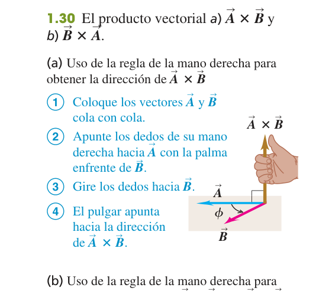
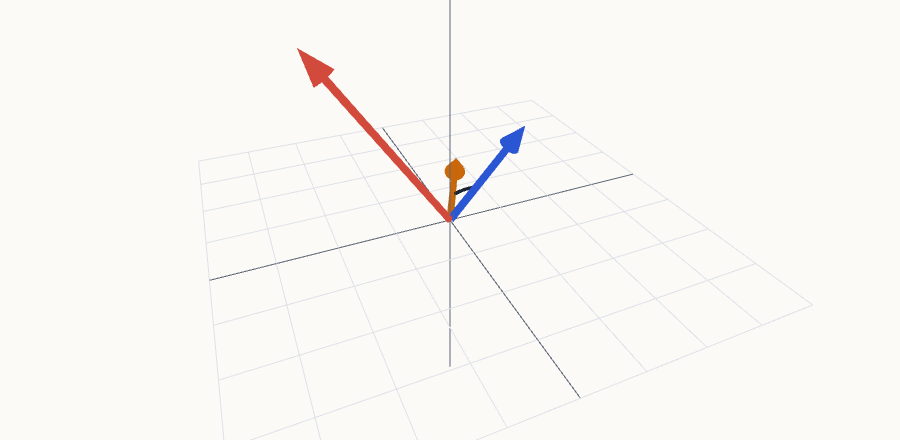

Unidades, cantidades físicas y vectores
Antes de hacer física hace falta saber medir y escribir lo medido: unidades del SI y cómo pasar de unas a otras, cuántas cifras de un resultado son de fiar, cómo estimar un orden de magnitud y, sobre todo, cómo trabajar con magnitudes que tienen dirección: los vectores. Sumarlos por componentes y multiplicarlos (producto escalar y producto vectorial) es la herramienta que usarás en todos los temas siguientes.
El tema en 5 minutos P
Bienvenido a Física I. Este primer tema no tiene física «nueva»: es la caja de herramientas que vas a usar en los otros 19. Medir con unidades y pasar de unas a otras, no fingir más precisión de la que tienes (cifras significativas), estimar órdenes de magnitud y, sobre todo, manejar vectores: sumarlos por componentes y multiplicarlos (producto escalar y producto vectorial). Posición, velocidad, fuerza, momento de una fuerza… todo lo que viene después se escribe con vectores.
Cómo estudiar esta asignatura (en breve). El examen presencial (80 % de la nota, 120 min, calculadora no programable) son 2 problemas de 3 puntos y 1 pregunta de teoría de 4 puntos a elegir entre dos. Las 4 PEC (15 %) son voluntarias y las prácticas de laboratorio (5 %) obligatorias. Así que en cada tema: (1) lee este resumen de 5 minutos, (2) estudia la teoría marcada 🔴, (3) intenta cada ejercicio antes de abrir la solución y quédate con su receta, (4) repasa con la chuleta. P
Necesitas: trigonometría básica (seno, coseno, tangente, Pitágoras), potencias de diez y notación científica, y despejar ecuaciones sencillas. No hace falta cálculo diferencial todavía.
El método en 4 pasos (úsalo en todos los problemas de la asignatura)
Es la «Estrategia para resolver problemas 1.1» del libro (IPEE: Identificar, Plantear, Ejecutar, Evaluar). U p.3
Las 6 reglas y fórmulas que hay que saber
| Regla o fórmula | Cuándo se usa |
|---|---|
| Factor unitario: $\dfrac{1\ \text{km}}{1000\ \text{m}}=1$; en áreas y volúmenes el factor va al cuadrado o al cubo | «exprese en m/s», «en kg/m³», datos en km/h, g/cm³, cm², litros, millas… |
| Cifras significativas: en $\times\div$ manda el dato con menos cifras; en $+-$ manda el decimal menos preciso | «con el número correcto de cifras significativas», y al dar cualquier resultado final. |
| $A_x=A\cos\theta,\quad A_y=A\sin\theta$ $\ $($\theta$ desde $+x$, antihorario) | Te dan un vector como «módulo y ángulo» y tienes que sumarlo o restarlo. |
| $A=\sqrt{A_x^2+A_y^2},\quad\tan\theta=\dfrac{A_y}{A_x}$ $\ $(si $A_x\lt 0$, suma 180°) | Tienes las componentes y te piden «magnitud y dirección». |
| $\vec A\cdot\vec B=AB\cos\phi=A_xB_x+A_yB_y+A_zB_z$ | «producto escalar», «ángulo entre dos vectores», «¿son perpendiculares?» (y en el tema 6: trabajo). |
| $|\vec A\times\vec B|=AB\sin\phi$; $\ C_z=A_xB_y-A_yB_x$; dirección: mano derecha | «producto vectorial», «vector perpendicular a ambos», «área del paralelogramo» (y en el tema 10: momento de una fuerza). |
Qué cae en examen
Ningún problema ni pregunta de teoría de los exámenes revisados (2018-2025) está dedicado a este tema. No por eso es prescindible: aparece dentro de todos los demás. Un dato en km/h o en g/cm³ que hay que pasar al SI, una fuerza inclinada que hay que descomponer en $x$ e $y$, un trabajo que es un producto escalar, un momento que es un producto vectorial. Entra además en la PEC 1 (temas 1-5). Si fallas aquí, fallas el problema de otro tema aunque sepas su física. P
Elige tu ruta
Esta página + lo marcado 🔴 imprescindible (unidades, cifras significativas, vectores, componentes y productos) + ejercicios del bloque «Núcleo».
Todo lo anterior + 🟡 modelos y estimaciones + bloque «Práctica» + guion de teoría.
Chuleta, errores frecuentes, lista de comprobación y E4, E6 y E8 sin mirar la solución.
¿?¿Qué tipo de problema es? 🔴 P
Lee el enunciado, busca la pista en la primera columna y ve directo al método y al ejercicio modelo.
| Si el enunciado dice… | Haz esto | Ejercicio modelo |
|---|---|---|
| «exprese en m/s», «convierta a kg/m³», datos en mi/h, ft, g/cm³ | Encadena factores unitarios orientados para que se cancele lo que sobra; si la unidad va al cuadrado o al cubo, el factor también. | E1 |
| «con las cifras significativas correctas» | Decide primero si la operación es $\times\div$ (cuenta cifras) o $+-$ (mira los decimales); redondea solo al final. | E2 |
| «estime», «¿cuántos… aproximadamente?», «orden de magnitud» | Estima tú los datos que faltan con números redondos, encadena factores y da 1 cifra significativa. | E3 |
| «magnitud y dirección de $\vec A+\vec B$ / $\vec A-\vec B$», vectores dados con módulo y ángulo | Pasa cada vector a componentes con signo (ojo al eje desde el que se mide el ángulo), suma o resta componente a componente, Pitágoras y arctan con corrección de cuadrante. | E4 |
| Vectores dados como $4.00\hat\imath+7.00\hat\jmath$ | Opera directamente sobre los coeficientes de $\hat\imath$, $\hat\jmath$, $\hat k$. | E5 |
| «producto escalar», «ángulo entre los vectores», «¿son perpendiculares?» | $\vec A\cdot\vec B=A_xB_x+A_yB_y+A_zB_z$ y $\cos\phi=\vec A\cdot\vec B/(AB)$. | E6 |
| «producto vectorial» con los vectores en componentes | $C_x=A_yB_z-A_zB_y$, $C_y=A_zB_x-A_xB_z$, $C_z=A_xB_y-A_yB_x$. | E7 |
| «producto vectorial» con módulos y ángulos (figura) | Módulo $AB\sin\phi$ con el ángulo entre ellos; dirección con la mano derecha; comprueba el signo con $C_z$. | E8 |
| «masa y densidad… ¿qué radio?», «¿cuántas veces el de la Tierra?» | $V=m/\rho$ (todo en SI) y $r=(3V/4\pi)^{1/3}$; para comparar, razona con el cociente. | E9 |
| «Desarrolle…» (vectores; unidades y medida) | Guion: idea → definición y fórmula → ejemplo con números → error típico. | Teoría |
1La física, los modelos y cómo atacar un problema 🟡 U p.2-4
🎯 Antes de leer: cuando lees un problema de física, ¿qué haces primero con los datos antes de usar fórmulas? (Piénsalo 20 s; la respuesta está en esta sección.)
Las leyes físicas no se inventan por elegancia: se proponen a partir de observaciones y se ponen a prueba con más experimentos. Por eso toda ley tiene un intervalo de validez: las leyes de Newton describen muy bien una pelota o un coche, pero no un objeto que va casi a la velocidad de la luz.
Para poder calcular algo, simplificamos con un modelo idealizado: una versión del sistema real que se queda con lo esencial. Ejemplo mínimo (fig. 1.2 de U): una pelota de béisbol lanzada gira, tiene costuras y nota el viento; el modelo la trata como una partícula, sin resistencia del aire y con peso constante. Ya se puede resolver (tema 3).
Error típico: simplificar de más. Si en el modelo de la pelota quitas también la gravedad, «predice» que la pelota sube en línea recta para siempre. Un buen modelo simplifica sin perder lo esencial.
U p.2-4✍️ Comprueba que lo has entendido (2 min)
- ¿En cuál de los cuatro pasos (Identificar, Plantear, Ejecutar, Evaluar) eliges las ecuaciones y haces el dibujo? ¿En cuál compruebas que las unidades del resultado son las pedidas?
Ver respuesta
Plantear; Evaluar. - Calculas cuánto tarda en caer una piedra desde una ventana sin tener en cuenta el aire. ¿Qué modelo idealizado estás usando? ¿Funcionaría igual para una pluma?
Ver respuesta
La piedra como partícula, sin resistencia del aire y con peso constante. Para una pluma no: la resistencia del aire es esencial en su movimiento. - ¿Por qué no basta con «aprenderse la fórmula» de una ley física?
Ver respuesta
Porque cada ley tiene un intervalo de validez y se apoya en un modelo: hay que saber cuándo se puede aplicar.
2Unidades del SI y conversión de unidades 🔴 U p.4-7
🎯 Antes de leer: ¿cuántos metros hay en un kilómetro? ¿Y cuántos metros cuadrados hay en un kilómetro cuadrado? (Piénsalo 20 s; la respuesta está en esta sección.)
Una cantidad física es un número con su unidad: «la mesa mide 1.5» no dice nada; «1.5 m», sí. Medir es comparar con un patrón; los científicos usan el SI, con tres unidades básicas para la mecánica:
| Magnitud | Unidad | Patrón |
|---|---|---|
| Tiempo | segundo (s) | Duración de 9 192 631 770 ciclos de la radiación de microondas del cesio-133 |
| Longitud | metro (m) | Distancia que recorre la luz en el vacío en 1/299 792 458 s |
| Masa | kilogramo (kg) | Masa de un cilindro patrón de platino-iridio guardado en Sèvres, cerca de París |
Las demás unidades se forman a partir de estas (m/s, kg/m³…), y los múltiplos se nombran con prefijos de potencias de 10: nano (n, $10^{-9}$), micro (µ, $10^{-6}$), mili (m, $10^{-3}$), centi (c, $10^{-2}$), kilo (k, $10^{3}$), mega (M, $10^{6}$), giga (G, $10^{9}$). Del sistema británico basta saber que 1 in = 2.54 cm exactamente.
Error típico: escribir un resultado sin unidad, o mezclar unidades (km con m, g con kg) en la misma ecuación. Pasa todo al SI antes de operar.
U p.4-6Solo se pueden sumar o igualar términos con las mismas unidades («no se suman manzanas y coches»). En $d=vt$, si $v=2$ m/s y $t=5$ s, las unidades también se multiplican: $(2\ \text{m/s})(5\ \text{s})=10$ m. Las unidades se tratan como símbolos algebraicos.
Para convertir, multiplica por factores unitarios: fracciones que valen 1 porque arriba y abajo hay la misma cantidad escrita de dos formas ($\tfrac{60\ \text{s}}{1\ \text{min}}=1$). Se orientan para que la unidad que sobra se cancele.
Ejemplo mínimo (ejemplo 1.1 de U):
$$763.0\ \frac{\text{mi}}{\text{h}}\times\frac{1.609\ \text{km}}{1\ \text{mi}}\times\frac{1000\ \text{m}}{1\ \text{km}}\times\frac{1\ \text{h}}{3600\ \text{s}} = 341.0\ \frac{\text{m}}{\text{s}}$$Error típico: poner el factor al revés. $(3\ \text{min})\times\tfrac{1\ \text{min}}{60\ \text{s}}$ da un absurdo «$\tfrac{1}{20}$ min²/s»: si las unidades no se cancelan, el factor está invertido. Comprobar las unidades del resultado es la revisión más barata del paso «Evaluar».
U p.6-7Si la unidad está al cuadrado o al cubo, el factor de conversión también: $1\ \text{cm}^3=(10^{-2}\ \text{m})^3=10^{-6}\ \text{m}^3$, no $10^{-2}\ \text{m}^3$.
Ejemplo mínimo (ejemplo 1.2 de U): un diamante de 1.84 in³:
$$1.84\ \text{in}^3\times\left(\frac{2.54\ \text{cm}}{1\ \text{in}}\right)^3=30.2\ \text{cm}^3=30.2\times10^{-6}\ \text{m}^3=3.02\times10^{-5}\ \text{m}^3$$Lo mismo con densidades: $1\ \text{g/cm}^3=10^3\ \text{kg/m}^3$ (ver E1 y E9).
U p.7✍️ Comprueba que lo has entendido (2 min)
- Pasa 90 km/h a m/s.
Ver respuesta
$90\ \tfrac{\text{km}}{\text{h}}\times\tfrac{1000\ \text{m}}{1\ \text{km}}\times\tfrac{1\ \text{h}}{3600\ \text{s}}=25$ m/s (truco: dividir entre 3.6). - Una mesa tiene 2.5 m² de superficie. ¿Cuántos cm² son?
Ver respuesta
$2.5\ \text{m}^2\times\left(\tfrac{100\ \text{cm}}{1\ \text{m}}\right)^2=2.5\times10^4$ cm² (no 250). - Alguien propone $x=vt^2$ para la distancia recorrida. ¿Es dimensionalmente consistente?
Ver respuesta
No: $(\text{m/s})(\text{s}^2)=\text{m}\cdot\text{s}$, que no es una longitud. La fórmula está mal.
3Incertidumbre y cifras significativas 🔴 U p.8-10
🎯 Antes de leer: una mesa mide «2,0 m» y otra «2,00 m». ¿Qué medida es más precisa y cuántas cifras significativas tiene cada una? (Piénsalo 20 s; la respuesta está en esta sección.)
Toda medida tiene incertidumbre: con una regla el grosor de una tapa es 3 mm; con un micrómetro, 2.91 mm. Se escribe $56.47\pm0.02$ mm o como error relativo: $0.02/56.47\approx0.0004=0.04\,\%$.
Si no se da el $\pm$, la incertidumbre la dicen las cifras significativas: los dígitos fiables más el primero dudoso. 2.91 mm tiene 3 (la última, las centésimas, es la dudosa); 0.25 km tiene 2 (los ceros de la izquierda no cuentan) y 0.250 km, 3. La notación científica lo deja claro: $3.84\times10^8$ m tiene 3 cifras; $4.00\times10^{-7}$, también 3.
Precisión no es exactitud: un reloj digital que marca segundos pero va adelantado es preciso y poco exacto; un reloj sin segundero que va en hora es exacto y poco preciso.
U p.8-9- Multiplicar o dividir: el resultado lleva tantas cifras como el dato con menos cifras. $3.1416\times2.34\times0.58=4.3$ (manda el 0.58).
- Sumar o restar: manda la posición decimal del dato menos preciso, no el número de cifras. $123.62+8.9=132.5$ (el 8.9 solo llega a las décimas).
- Redondea, no trunques, y hazlo al final: $525/311=1.688\ldots\to1.69$, no 1.68. Los números exactos de una fórmula (el 2 de $2ax$, el exponente de $v^2$) no limitan nada.
Error típico: copiar los 10 dígitos de la calculadora (341.01861 m/s en el ejemplo 1.1), o aplicar a una resta la regla de la multiplicación: $12-5.98=6.02$ se da como 6 (el 12 no tiene decimales), no como «6.0».
U p.8-9✍️ Comprueba que lo has entendido (2 min)
- ¿Cuántas cifras significativas tienen 0.0250 kg y $3.00\times10^8$ m/s?
Ver respuesta
3 cada uno: en 0.0250 los ceros de la izquierda no cuentan y el último sí. - Un círculo mide 2.5 m de radio. Calcula $\pi r$ con $\pi=3.14159$ y las cifras correctas.
Ver respuesta
$3.14159\times2.5=7.853975\to7.9$ m (2 cifras, las del 2.5). - Sumas 15.27 m y 3.1 m. ¿Cómo das el resultado?
Ver respuesta
$18.37\to18.4$ m: el 3.1 solo llega a las décimas.
4Estimaciones y órdenes de magnitud 🟡 U p.10
🎯 Antes de leer: sin calculadora: ¿cuántos latidos da un corazón humano en toda una vida, más o menos? ¿Con qué potencia de diez lo expresarías? (Piénsalo 20 s; la respuesta está en esta sección.)
A veces basta saber si algo es del orden de 10, de 1000 o de un millón. Una estimación de orden de magnitud usa datos redondos (estimados tú mismo si faltan) y sigue siendo útil aunque se equivoque en un factor 2 o incluso 10.
Ejemplo mínimo (ejemplo 1.4 de U): ¿cabe en una maleta oro por valor de mil millones de dólares? Con unos 100 $ por cada 2 g de oro, $10^9$ $ son $\sim2\times10^7$ g $=2\times10^4$ kg (¡20 toneladas!). Con una densidad $\sim10^4$ kg/m³ (unas 10 veces la del agua), ocupa $\sim2$ m³. No cabe.
Error típico: dar una estimación con muchas cifras («$3.14\times10^8$») sugiere una precisión que no tienes: da 1 cifra o la potencia de 10.
U p.10✍️ Comprueba que lo has entendido (2 min)
- Orden de magnitud de los segundos que vive una persona de 80 años.
Ver respuesta
$80\times365\times24\times3600\approx2.5\times10^9$ s: del orden de $10^9$ s. - Si una gota de agua tiene unos 0.05 cm³, ¿cuántas gotas hay en 1.0 L?
Ver respuesta
$1000\ \text{cm}^3/0.05\ \text{cm}^3=2\times10^4$ gotas. - En una estimación te sale 274 000 000. ¿Cómo lo escribes?
Ver respuesta
$\approx3\times10^8$ (1 cifra significativa).
5Vectores y suma de vectores 🔴 U p.10-14
🎯 Antes de leer: un barco navega 3 km hacia el este y luego 4 km hacia el norte. ¿A qué distancia queda de su punto de partida? (Piénsalo 20 s; la respuesta está en esta sección.)
Un escalar queda descrito con un número y su unidad: tiempo, masa, temperatura, densidad. Un vector necesita además una dirección: no es lo mismo caminar 3 km hacia el norte que hacia el este. El ejemplo básico es el desplazamiento: la flecha del punto de partida al de llegada, sea cual sea el camino. Velocidad y fuerza también son vectores.
Se escribe con flecha, $\vec A$; su magnitud (módulo) $A=|\vec A|$ es siempre positiva. Dos vectores son iguales si tienen la misma magnitud y dirección, estén donde estén dibujados; $-\vec A$ tiene la misma magnitud y sentido contrario.
Error típico: confundir la distancia recorrida (escalar, depende del camino) con la magnitud del desplazamiento (solo depende del principio y el final).
U p.10-12Suma cola-punta: la cola de $\vec B$ en la punta de $\vec A$; $\vec A+\vec B$ va de la cola de $\vec A$ a la punta de $\vec B$. Paralelogramo: los dos desde el mismo origen; la suma es la diagonal. Es conmutativa y asociativa. Resta: $\vec A-\vec B=\vec A+(-\vec B)$ (1.4). Escalar: $c\vec A$ mide $|c|A$, con la dirección de $\vec A$ si $c\gt 0$ y la contraria (antiparalelo) si $c\lt 0$.
Ejemplo mínimo (ejemplo 1.5 de U): un esquiador va 1.00 km al norte y luego 2.00 km al este. Los desplazamientos son perpendiculares, así que basta Pitágoras: $\sqrt{1.00^2+2.00^2}=2.24$ km, con $\tan\phi=2.00/1.00$ ⇒ $\phi=63.4°$ al este del norte.
Error típico: $|\vec A+\vec B|\ne A+B$. Las magnitudes solo se suman si los vectores son paralelos; con $A=3$ y $B=4$, $|\vec A+\vec B|$ puede valer cualquier cosa entre 1 y 7.
U p.12-14✍️ Comprueba que lo has entendido (2 min)
- Caminas 3.0 km al norte y luego 4.0 km al este. ¿Qué distancia has recorrido y cuánto mide tu desplazamiento?
Ver respuesta
Distancia: 7.0 km. Desplazamiento: $\sqrt{3.0^2+4.0^2}=5.0$ km. - $\vec S$ mide 3 m y $\vec T$ 4 m. ¿Puede $|\vec S-\vec T|$ valer 9 m? ¿Y 5 m? ¿Y −1 m?
Ver respuesta
9 m no (el máximo es 7 m, si son antiparalelos). 5 m sí (si son perpendiculares). −1 m nunca: una magnitud no es negativa. - $\vec A$ mide 3 m hacia el este. Describe $-2\vec A$.
Ver respuesta
6 m hacia el oeste.
6Componentes y vectores unitarios 🔴 U p.14-19
🎯 Antes de leer: en el vector $\vec A=3\hat\imath-4\hat\jmath$, ¿qué significa cada número? ¿Cuánto mide el vector? (Piénsalo 20 s; la respuesta está en esta sección.)
Sumar con regla y transportador es lento e impreciso. Mejor descomponer cada vector en sus componentes: lo que avanza en $x$ y lo que avanza en $y$ (números con signo, no vectores). Si $\theta$ se mide desde el eje $+x$ en sentido antihorario:
$$A_x=A\cos\theta\qquad A_y=A\sin\theta\qquad(1.5)$$ $$A=\sqrt{A_x^2+A_y^2}\quad(1.6)\qquad\tan\theta=\frac{A_y}{A_x}\quad(1.7)$$Ejemplo mínimo (ejemplo 1.6 de U): $\vec D$ de 3.00 m forma 45° con $+x$ pero hacia $-y$, así que $\theta=-45°$: $D_x=+2.1$ m, $D_y=-2.1$ m. Con $\theta=+45°$ el signo de $D_y$ saldría mal.
Error típico: (1) usar las fórmulas con un ángulo medido desde $+y$ o en sentido horario sin convertirlo antes; (2) fiarse del arctan: la calculadora devuelve un ángulo entre −90° y 90°, así que si $A_x\lt 0$ hay que sumar 180°. Un croquis con el cuadrante evita los dos.
U p.14-16Si $\vec R=\vec A+\vec B+\cdots$, cada componente se suma por separado (1.9-1.10):
$$R_x=A_x+B_x+\cdots\qquad R_y=A_y+B_y+\cdots\qquad R_z=A_z+B_z+\cdots$$- Dibuja los vectores con sus ángulos y los ejes.
- Calcula las componentes de cada uno con (1.5), con su signo; una tabla ayuda.
- Suma las columnas: $R_x$, $R_y$ (y $R_z$).
- Magnitud con (1.6) [en 3D, $R=\sqrt{R_x^2+R_y^2+R_z^2}$ (1.11)] y dirección con (1.7), comprobando el cuadrante en el dibujo.
Para restar, se suma el opuesto: las componentes de $-\vec B$ son $-B_x$, $-B_y$. Método completo en E4.
U p.16-17Un vector unitario tiene magnitud 1 y sin unidades: solo marca una dirección. $\hat\imath$, $\hat\jmath$, $\hat k$ apuntan según $+x$, $+y$, $+z$, y cualquier vector se escribe
$$\vec A=A_x\hat\imath+A_y\hat\jmath+A_z\hat k\qquad(1.14)$$Así sumar, restar o multiplicar por un número es operar con los coeficientes. Ejemplo mínimo (ejemplo 1.8 de U): con $\vec D=(6.00\hat\imath+3.00\hat\jmath-1.00\hat k)$ m y $\vec E=(4.00\hat\imath-5.00\hat\jmath+8.00\hat k)$ m,
$$2\vec D-\vec E=(8.00\hat\imath+11.00\hat\jmath-10.00\hat k)\ \text{m},\qquad |2\vec D-\vec E|=\sqrt{8.00^2+11.00^2+10.00^2}=16.9\ \text{m}$$Error típico: perder un signo al restar una componente negativa. En el ejemplo, la componente $y$ es $6.00-(-5.00)=+11.00$, no $1.00$: haz primero $2\vec D$ y luego resta coeficiente a coeficiente.
U p.18-19✍️ Comprueba que lo has entendido (2 min)
- $\vec A$ mide 10.0 m y forma 30.0° con el eje $+x$ (antihorario). Halla sus componentes.
Ver respuesta
$A_x=10.0\cos30.0°=8.66$ m; $A_y=10.0\sin30.0°=5.00$ m. - $A_x=-3.00$ m, $A_y=4.00$ m. Magnitud y dirección.
Ver respuesta
$A=5.00$ m. La calculadora da $\arctan(4.00/-3.00)=-53.1°$, pero $A_x\lt 0$ (2.º cuadrante): $\theta=-53.1°+180°=126.9°$. - Calcula la magnitud de $\vec A=2.00\hat\imath-3.00\hat\jmath+6.00\hat k$.
Ver respuesta
$\sqrt{4.00+9.00+36.0}=\sqrt{49}=7.00$.
7Producto escalar 🔴 U p.19-22
🎯 Antes de leer: ¿cuánto vale el producto escalar de dos vectores perpendiculares? ¿Y el de dos vectores paralelos del mismo sentido? (Piénsalo 20 s; la respuesta está en esta sección.)
$\phi$ es el ángulo entre los dos vectores puestos cola con cola. El resultado es un escalar y el orden no importa. Geométricamente es $A$ por la proyección de $\vec B$ sobre $\vec A$: máximo si son paralelos, cero si son perpendiculares, negativo si $\phi\gt 90°$. Con unitarios: $\hat\imath\cdot\hat\imath=\hat\jmath\cdot\hat\jmath=\hat k\cdot\hat k=1$ y $\hat\imath\cdot\hat\jmath=\hat\jmath\cdot\hat k=\hat k\cdot\hat\imath=0$ (1.17-1.18), por eso en (1.19) solo sobreviven tres términos. En el tema 6 será el trabajo: $W=\vec F\cdot\vec s$.
Ejemplo mínimo (ejemplo 1.9 de U): $A=4.00$ a 53.0° y $B=5.00$ a 130.0°: $\phi=77.0°$ y $\vec A\cdot\vec B=(4.00)(5.00)\cos77.0°=4.50$, positivo porque $\phi\lt 90°$.
Error típico: escribir el resultado con $\hat\imath$, $\hat\jmath$ (es un número), o multiplicar «en cruz» ($A_xB_y$) en vez de componente con componente.
U p.19-21Igualando las dos expresiones del producto escalar:
$$\cos\phi=\frac{\vec A\cdot\vec B}{AB}=\frac{A_xB_x+A_yB_y+A_zB_z}{AB}$$Ejemplo mínimo (ejemplo 1.10 de U): $\vec A=2.00\hat\imath+3.00\hat\jmath+1.00\hat k$, $\vec B=-4.00\hat\imath+2.00\hat\jmath-1.00\hat k$. $\vec A\cdot\vec B=-8.00+6.00-1.00=-3.00$; $A=\sqrt{14.00}$, $B=\sqrt{21.00}$; $\cos\phi=-0.175$ ⇒ $\phi=100°$. El signo negativo ya avisaba de que $\phi\gt 90°$.
U p.21-22✍️ Comprueba que lo has entendido (2 min)
- $\vec A=\hat\imath+2\hat\jmath+3\hat k$, $\vec B=4\hat\imath-5\hat\jmath+6\hat k$. Calcula $\vec A\cdot\vec B$.
Ver respuesta
$4-10+18=12$. - ¿Son perpendiculares $\vec A=3\hat\imath+4\hat\jmath$ y $\vec B=4\hat\imath-3\hat\jmath$?
Ver respuesta
Sí: $\vec A\cdot\vec B=12-12=0$. - $A=2$, $B=5$ y forman 120°. ¿Cuánto vale $\vec A\cdot\vec B$?
Ver respuesta
$(2)(5)\cos120°=-5$ (negativo: apuntan «hacia lados opuestos»).
8Producto vectorial 🔴 U p.22-24
🎯 Antes de leer: el producto vectorial de dos vectores del plano $xy$, ¿hacia dónde apunta? ¿Importa el orden de los factores? (Piénsalo 20 s; la respuesta está en esta sección.)
$\vec A\times\vec B$ es otro vector, perpendicular al plano de $\vec A$ y $\vec B$, de magnitud
$$|\vec A\times\vec B|=AB\sin\phi\qquad(1.20)$$($\phi$ entre 0° y 180°, el ángulo menor). Es el área del paralelogramo de lados $\vec A$ y $\vec B$: máxima si son perpendiculares y cero si son paralelos (lo contrario que el producto escalar). El sentido lo da la regla de la mano derecha: dedos de $\vec A$ hacia $\vec B$ por el camino corto, el pulgar marca $\vec A\times\vec B$. Es anticonmutativo: $\vec B\times\vec A=-\vec A\times\vec B$ (1.21). En el tema 10 será el momento de una fuerza.
Ejemplo mínimo (ejemplo 1.11 de U): $A=6$ sobre $+x$, $B=4$ en el plano $xy$ a 30° de $+x$: $|\vec A\times\vec B|=(6)(4)\sin30°=12$, y la mano derecha da $+z$: $\vec A\times\vec B=12\hat k$.
Error típico: confundir $AB\sin\phi$ (producto vectorial) con $AB\cos\phi$ (escalar), o cambiar el orden y obtener el sentido contrario.
U p.22-24
En un sistema de ejes de mano derecha (el que se usa siempre): $\hat\imath\times\hat\jmath=\hat k$, $\hat\jmath\times\hat k=\hat\imath$, $\hat k\times\hat\imath=\hat\jmath$, al revés cambia el signo y $\hat\imath\times\hat\imath=0$ (1.22). Desarrollando término a término (1.25):
$$C_x=A_yB_z-A_zB_y\qquad C_y=A_zB_x-A_xB_z\qquad C_z=A_xB_y-A_yB_x$$Truco: cada componente usa las otras dos letras en orden cíclico $x\to y\to z\to x$. En el plano $xy$ solo queda $C_z$, y su signo dice si sale del papel ($+z$, ⊙) o entra ($-z$, ⊗).
Error típico: $\hat\jmath\times\hat\imath=-\hat k$, no $+\hat k$; un orden equivocado invierte el resultado.
U p.23-24
✍️ Comprueba que lo has entendido (2 min)
- ¿Cuánto valen $\hat\imath\times\hat\jmath$, $\hat\jmath\times\hat\imath$ y $\hat k\times\hat k$?
Ver respuesta
$\hat k$, $-\hat k$ y $\vec 0$. - $A=4$, $B=5$ y forman 30°. ¿Área del paralelogramo que forman?
Ver respuesta
$|\vec A\times\vec B|=(4)(5)\sin30°=10$. - $\vec A=\hat\imath+2\hat\jmath$, $\vec B=3\hat\imath+\hat\jmath$. Calcula $\vec A\times\vec B$. ¿Entra o sale del papel?
Ver respuesta
$C_z=(1)(1)-(2)(3)=-5$: $\vec A\times\vec B=-5\hat k$, entra en el papel.
9Ejercicios resueltos
Este tema no tiene ninguna pregunta de examen real (convocatorias 2018-2025), así que los ejercicios son del solucionario del libro (E1-E9, traducidos y ampliados), ordenados por método, no por número: seis en el Núcleo (uno por método) y tres de Práctica que repiten esos métodos con otros datos. Los ejemplos del libro que enseñan algo distinto (vectores en 3D, producto escalar con módulo y ángulo) están resueltos dentro de la teoría. Intenta resolver tú antes de abrir la solución. Cada ejercicio termina con su receta.
| Ejercicio | Qué tipo es | Método que te llevas |
|---|---|---|
| E1 | Conversión de unidades | Cadena de factores unitarios orientados para cancelar; con cm³ o m², el factor de longitud al cubo o al cuadrado |
| E6 | Producto escalar y ángulo | $\vec A\cdot\vec B=A_xB_x+A_yB_y$, módulos con Pitágoras y $\phi=\arccos\dfrac{\vec A\cdot\vec B}{AB}$ |
| E3 | Estimación de orden de magnitud | Estimar lo que falta con números redondos, encadenar factores y dar 1 cifra |
| E4 | Suma y resta de vectores | Componentes con signo (ángulo llevado a $+x$) → sumar o restar → Pitágoras y arctan con corrección de cuadrante |
| E8 | Producto vectorial (módulo y dirección) | $AB\sin\phi$ con el ángulo entre ellos; mano derecha para el sentido; $C_z=A_xB_y-A_yB_x$ para comprobar |
| E2 | Cifras significativas | ¿$\times\div$ o $+-$? Contar cifras o mirar decimales; redondear solo al final |
E1 — Ejercicio 1.10: conversión de unidades (rapidez, aceleración y densidad) E 🔴 U p.6-7, 28
a) Un coche va a 60 mi/h. ¿A cuántos ft/s equivale? b) La aceleración de la gravedad es 32 ft/s². ¿Cuánto es en m/s²? c) La densidad del agua es 1.0 g/cm³. ¿Cuánto es en kg/m³?
Inténtalo primero; abre una pista solo si te atascas.
Pista 1
Multiplica por factores unitarios orientados de modo que se cancele la unidad que sobra.
Pista 2
Si la unidad original está al cuadrado o al cubo, el factor de conversión también va elevado a esa potencia.
Solución completa
- Factores de conversión: $1\ \text{mi}=5280\ \text{ft}$, $1\ \text{ft}=0.3048\ \text{m}$, $1\ \text{h}=3600\ \text{s}$, $1\ \text{m}=100\ \text{cm}$, $1\ \text{kg}=1000\ \text{g}$
- Unidad al cuadrado o al cubo ⇒ el factor también va al cuadrado o al cubo
- a) Rapidez: $$60\ \frac{\text{mi}}{\text{h}}\times\frac{5280\ \text{ft}}{1\ \text{mi}}\times\frac{1\ \text{h}}{3600\ \text{s}}=\mathbf{88\ ft/s}$$
- b) Aceleración: $$32\ \frac{\text{ft}}{\text{s}^2}\times\frac{0.3048\ \text{m}}{1\ \text{ft}}=9.7536\ \text{m/s}^2\approx\mathbf{9.8\ m/s^2}$$ El dato 32 tiene 2 cifras significativas: se redondea a 9.8.
- c) Densidad: $$1.0\ \frac{\text{g}}{\text{cm}^3}\times\frac{1\ \text{kg}}{1000\ \text{g}}\times\Big(\frac{100\ \text{cm}}{1\ \text{m}}\Big)^3=\mathbf{1.0\times10^3\ kg/m^3}$$ El factor de longitud va al cubo porque la unidad original está al cubo.
En c), usar $\dfrac{100\ \text{cm}}{1\ \text{m}}$ sin elevar al cubo: saldría 10 kg/m³ en lugar de $1.0\times10^3$ kg/m³. Truco de comprobación: un litro de agua (1000 cm³) pesa 1 kg, así que 1 m³ (1000 L) son 1000 kg.
E6 — Ejercicio 1.42: producto escalar y ángulo entre dos vectores E 🔴 U p.20-21, 29
Con los mismos $\vec A=4.00\hat\imath+7.00\hat\jmath$ y $\vec B=5.00\hat\imath-2.00\hat\jmath$: a) calcula $\vec A\cdot\vec B$; b) halla el ángulo entre ambos vectores.
Inténtalo primero; abre una pista solo si te atascas.
Pista 1
$\vec A\cdot\vec B=A_xB_x+A_yB_y$ (componente con su misma componente) y es un número, no un vector.
Pista 2
$\cos\phi=\vec A\cdot\vec B/(AB)$; un producto positivo da un ángulo menor que $90^\circ$.
Solución completa
- Producto escalar por componentes: $\vec A\cdot\vec B=A_xB_x+A_yB_y$ (un número)
- Ángulo entre vectores: $\cos\phi=\dfrac{\vec A\cdot\vec B}{A\,B}$
- Módulos: $$A=\sqrt{65}=8.06,\qquad B=\sqrt{29}=5.39$$
- a) Producto escalar: $$\vec A\cdot\vec B=(4.00)(5.00)+(7.00)(-2.00)=20.0-14.0=\mathbf{6.00}$$
- b) Ángulo: $$\cos\phi=\frac{6.00}{(8.06)(5.39)}=0.138\ \Rightarrow\ \phi=\mathbf{82.1^\circ}$$ Producto positivo y $\phi<90^\circ$: coherentes entre sí.
Multiplicar «en cruz» ($A_xB_y+A_yB_x$) o tomar el signo de $B_y$ como positivo: aquí saldría 43 en vez de 6.00 y un ángulo absurdo. Y olvidar que el resultado es un número, sin $\hat\imath$ ni $\hat\jmath$.
E3 — Ejercicio 1.18: estimación del consumo diario de gasolina E 🟡 U p.10, 28
Estima cuántos galones de gasolina se consumen al día en EE. UU., suponiendo 2 coches por cada 3 personas, que cada coche recorre 10 000 mi/año y rinde 20 mi/gal.
Inténtalo primero; abre una pista solo si te atascas.
Pista 1
El enunciado no da la población: estímala (≈ $3\times10^8$ habitantes) y encadena factores.
Pista 2
Pasa a consumo diario: millas por año ÷ 365 y ÷ rendimiento (mi/gal).
Solución completa
- Consumo diario $=$ (nº de coches) × (mi/día por coche) ÷ (mi/gal)
- Resultado con 1 cifra significativa (son estimaciones)
- Población (hay que estimarla; U §1.6): $\approx3\times10^8$ habitantes.
- Número de coches: $$3\times10^8\cdot\tfrac23=2\times10^8\ \text{coches}$$
- Recorrido diario por coche: $$\frac{10\,000\ \text{mi/año}}{365\ \text{día/año}}\approx27\ \text{mi/día}$$
- Consumo por coche: $$\frac{27\ \text{mi/día}}{20\ \text{mi/gal}}\approx1.4\ \text{gal/día}$$
- Total: $$2\times10^8\times1.4\approx\mathbf{3\times10^8\ gal/d\acute ia}\quad(\approx1\ \text{gal por habitante al día})$$
Dar «$2.74\times10^8$ gal/día» o más cifras: los datos de partida son estimaciones; el resultado honesto es «unos $3\times10^8$», es decir, del orden de $10^8$-$10^9$.
E4 — Ejercicio 1.31: suma y resta de vectores por componentes E 🔴 U p.14-16, 29
$\vec A$ mide 8.00 m y apunta en la dirección $-y$. $\vec B$ mide 15.0 m y forma 30.0° con el eje $+y$ (es decir, 60.0° con el eje $+x$). Calcula: a) $\vec A+\vec B$; b) $\vec B+\vec A$; c) $\vec A-\vec B$; d) $\vec B-\vec A$ (magnitud y ángulo en cada caso).
Inténtalo primero; abre una pista solo si te atascas.
Pista 1
El ángulo de $\vec B$ se mide desde $+y$: $B_x=B\sin30^\circ$ y $B_y=B\cos30^\circ$.
Pista 2
Suma por componentes; el $\arctan$ da el ángulo correcto solo en el primer cuadrante: revisa el cuadrante con los signos.
Solución completa
- Componentes: ángulo desde $+x$: $B_x=B\cos\theta$, $B_y=B\sin\theta$; ángulo desde $+y$: $B_x=B\sin\theta$, $B_y=B\cos\theta$
- Suma/resta por componentes; magnitud $R=\sqrt{R_x^2+R_y^2}$; ángulo $\theta=\arctan\dfrac{R_y}{R_x}$ (corregir el cuadrante)
- Componentes (el ángulo de $\vec B$ se mide desde $+y$): $$A_x=0,\quad A_y=-8.00\ \text{m};\qquad B_x=15.0\sin30.0^\circ=7.50\ \text{m},\quad B_y=15.0\cos30.0^\circ=12.99\ \text{m}$$
- a) $\vec A+\vec B$: $$C_x=7.50,\ C_y=4.99\ \Rightarrow\ C=\sqrt{7.50^2+4.99^2}=\mathbf{9.01\ m},\quad\theta=\arctan\frac{4.99}{7.50}=\mathbf{33.6^\circ}$$ 1.er cuadrante: sin corrección.
- b) $\vec B+\vec A$: conmutatividad: mismo resultado, 9.01 m a 33.6°.
- c) $\vec A-\vec B$: $$D_x=-7.50,\ D_y=-20.99\ \Rightarrow\ D=\sqrt{7.50^2+20.99^2}=\mathbf{22.3\ m}$$ $$\arctan\frac{-20.99}{-7.50}=70.3^\circ\ \Rightarrow\ \text{3.er cuadrante: }\theta=70.3^\circ+180^\circ=\mathbf{250.3^\circ}$$
- d) $\vec B-\vec A=-\vec D$: misma magnitud 22.3 m, dirección opuesta: $\theta=\mathbf{70.3^\circ}$.
Usar $B_x=B\cos30°$ porque «la $x$ siempre va con coseno»: eso solo vale si el ángulo se mide desde $+x$. Y fiarse del arctan de la calculadora en el 3er cuadrante: da 70.3° en vez de 250.3°.
E8 — Ejercicio 1.46: producto vectorial con la regla de la mano derecha E 🔴 U p.22, 29
$\vec A$ mide 2.80 cm, a 60.0° sobre el eje $+x$. $\vec B$ mide 1.90 cm, a 60.0° bajo el eje $+x$. Calcula: a) $\vec A\times\vec B$ (magnitud y dirección); b) $\vec B\times\vec A$.
Inténtalo primero; abre una pista solo si te atascas.
Pista 1
Módulo: $AB\sin\phi$ con $\phi$ el ángulo entre los vectores (aquí $60^\circ+60^\circ$).
Pista 2
Dirección con la regla de la mano derecha (de $\vec A$ hacia $\vec B$); $\vec B\times\vec A=-\vec A\times\vec B$.
Solución completa
- Magnitud del producto vectorial: $|\vec A\times\vec B|=A\,B\sin\phi$ ($\phi$ = ángulo entre los vectores)
- Dirección: regla de la mano derecha; $C_z=A_xB_y-A_yB_x$; $\vec B\times\vec A=-\vec A\times\vec B$
- Ángulo entre los vectores (uno por encima del eje $x$, otro por debajo): $$\phi=60.0^\circ+60.0^\circ=120^\circ$$
- a) Magnitud: $$|\vec A\times\vec B|=(2.80)(1.90)\sin120^\circ=\mathbf{4.61\ cm^2}$$ De $\vec A$ a $\vec B$ por el camino corto se gira en sentido horario: la mano derecha da $-z$ (hacia dentro del papel).
- Comprobación con componentes: $$A_x=1.40,\ A_y=2.42;\quad B_x=0.95,\ B_y=-1.65$$ $$C_z=1.40(-1.65)-2.42(0.95)=-2.31-2.30=-4.61\ \checkmark$$
- b) $\vec B\times\vec A$: $$\vec B\times\vec A=-(\vec A\times\vec B):\ \text{misma magnitud }\mathbf{4.61\ cm^2},\ \text{dirección }+z$$
Tomar como $\phi$ el ángulo de cada vector con el eje (60°) en lugar del ángulo entre ellos (120°). Aquí da igual el módulo porque $\sin60°=\sin120°$, pero con otros ángulos no; y en el producto escalar ($\cos$) el signo cambiaría.
E2 — Ejercicio 1.14: cifras significativas en un rectángulo E 🔴 U p.8, 28
Un rectángulo mide 12 mm por 5.98 mm. Con el número correcto de cifras significativas, calcula: a) el área; b) la razón ancho/largo; c) el perímetro; d) la diferencia largo−ancho; e) la razón largo/ancho.
Inténtalo primero; abre una pista solo si te atascas.
Pista 1
En productos y cocientes manda el dato con menos cifras significativas; en sumas y restas, el decimal menos preciso.
Pista 2
Perímetro y diferencia son sumas: aplica la regla de los decimales.
Solución completa
- Área: $A=\ell\,w$; perímetro: $P=2(\ell+w)$; razones: $w/\ell$ y $\ell/w$
- Multiplicar o dividir: tantas cifras significativas como el dato que menos tiene; sumar o restar: la posición decimal menos precisa
- a) Área (manda el «12»: 2 cifras): $$A=12\times5.98=71.76\ \to\ \mathbf{72\ mm^2}$$
- b) Razón ancho/largo: $$\frac{5.98}{12}=0.4983\ \to\ \mathbf{0.50}$$
- c) Perímetro (regla de la suma: «12» no tiene decimales): $$P=2(12+5.98)=2(17.98)=35.96\ \to\ \mathbf{36\ mm}$$
- d) Diferencia largo−ancho: $$12-5.98=6.02\ \to\ \mathbf{6\ mm}$$
- e) Razón largo/ancho: $$\frac{12}{5.98}=2.0067\ \to\ \mathbf{2.0}$$
Dar el perímetro como «36.0 mm» o «35.96 mm»: el lado de 12 mm solo se conoce hasta el milímetro, así que la suma tampoco puede saberse mejor.
E7 — Ejercicio 1.44: producto vectorial por componentes E 🟡 U p.23, 29
Calcula $\vec A\times\vec B$ para $\vec A=4.00\hat\imath+7.00\hat\jmath$ y $\vec B=5.00\hat\imath-2.00\hat\jmath$.
- $\hat\imath\times\hat\jmath=\hat k$, $\hat\jmath\times\hat\imath=-\hat k$, $\hat\imath\times\hat\imath=\hat\jmath\times\hat\jmath=0$
- Por componentes (plano $xy$): $C_z=A_xB_y-A_yB_x$
- Desarrollo término a término: $$\vec A\times\vec B=(4\hat\imath+7\hat\jmath)\times(5\hat\imath-2\hat\jmath)=4(-2)(\hat\imath\times\hat\jmath)+7(5)(\hat\jmath\times\hat\imath)=-8\hat k-35\hat k=\mathbf{-43.0\,\hat k}$$
- Comprobación con componentes: $$C_z=A_xB_y-A_yB_x=4(-2)-7(5)=-43\ \checkmark$$
- Magnitud: $$|\vec A\times\vec B|=\mathbf{43.0}$$
E5 — Ejercicio 1.38: resta con vectores unitarios E 🟡 U p.18-19, 29
$\vec A=4.00\hat\imath+7.00\hat\jmath$, $\vec B=5.00\hat\imath-2.00\hat\jmath$. Calcula: a) $|\vec A|$ y $|\vec B|$; b) $\vec A-\vec B$; c) magnitud y ángulo de $\vec A-\vec B$.
- $|\vec A|=\sqrt{A_x^2+A_y^2}$; resta por componentes: $\vec A-\vec B=(A_x-B_x)\hat\imath+(A_y-B_y)\hat\jmath$
- Ángulo: $\theta=\arctan\dfrac{R_y}{R_x}$ (corregir el cuadrante)
- a) Módulos: $$|\vec A|=\sqrt{4.00^2+7.00^2}=\mathbf{8.06},\qquad|\vec B|=\sqrt{5.00^2+2.00^2}=\mathbf{5.39}$$
- b) Resta: $$\vec A-\vec B=(4.00-5.00)\hat\imath+\big(7.00-(-2.00)\big)\hat\jmath=\mathbf{-1.00\,\hat\imath+9.00\,\hat\jmath}$$
- c) Magnitud y ángulo: $$R=\sqrt{(-1.00)^2+9.00^2}=\mathbf{9.06},\qquad\arctan\frac{9.00}{-1.00}=-83.7^\circ$$ $$R_x<0,\ R_y>0\ (\text{2.º cuadrante})\ \Rightarrow\ \theta=-83.7^\circ+180^\circ=\mathbf{96.3^\circ}$$
E9 — Problema 1.51: densidad y radio de un planeta E 🟡 U p.6-7, 30
Un planeta tiene 5.5 veces la masa de la Tierra ($m_T=5.97\times10^{24}$ kg) pero la misma densidad que Neptuno (1.76 g/cm³). Calcula su radio y compáralo con el de la Tierra ($r_T=6.37\times10^6$ m).
- Densidad: $\rho=\dfrac{m}{V}$ ⇒ $V=\dfrac m\rho$; esfera: $V=\tfrac43\pi r^3$ ⇒ $r=\Big(\dfrac{3V}{4\pi}\Big)^{1/3}$
- $1\ \text{g/cm}^3=1000\ \text{kg/m}^3$
- Masa: $$m=5.5(5.97\times10^{24})=3.28\times10^{25}\ \text{kg}$$
- Densidad en SI: $$\rho=1.76\ \text{g/cm}^3=1760\ \text{kg/m}^3$$
- Volumen: $$V=\frac m\rho=\frac{3.28\times10^{25}}{1760}=1.87\times10^{22}\ \text{m}^3$$
- Radio: $$r=\Big(\frac{3(1.87\times10^{22})}{4\pi}\Big)^{1/3}=1.65\times10^7\ \text{m}=\mathbf{1.65\times10^4\ km}$$
- Razón con la Tierra: $$\frac{r}{r_T}=\frac{1.65\times10^7}{6.37\times10^6}=2.58$$ El dato 5.5 tiene 2 cifras: $r\approx1.6\times10^4$ km $\approx2.6\,r_T$.
1. Conversión de unidades cuadradas P
Un campo mide 2,0 km². ¿Cuántos metros cuadrados son?
Solución con fallo. $2{,}0\ \text{km}^2\times\dfrac{1000\ \text{m}}{1\ \text{km}}=2{,}0\times10^3\ \text{m}^2$.
¿Qué falla?
La unidad está al cuadrado: el factor de conversión también. $2{,}0\ \text{km}^2\times\left(\dfrac{1000\ \text{m}}{1\ \text{km}}\right)^2=\mathbf{2{,}0\times10^6\ m^2}$.
2. Cifras significativas en una suma P
Un rectángulo mide 12 mm por 5,98 mm. ¿Cuánto vale la suma de sus lados, 12 mm + 5,98 mm?
Solución con fallo. «$12+5{,}98=17{,}98$ mm».
¿Qué falla?
En sumas manda el decimal menos preciso: «12» no tiene decimales, luego el resultado es $\mathbf{18\ mm}$ (la regla de las cifras significativas es para productos y cocientes).
3. Ángulo de un vector en el tercer cuadrante P
$\vec D$ tiene componentes $D_x=-7{,}50$ m y $D_y=-20{,}99$ m. ¿Qué ángulo forma con $+x$?
Solución con fallo. $\theta=\arctan(-20{,}99/-7{,}50)=70{,}3^\circ$.
¿Qué falla?
El cociente de dos negativos es positivo y la calculadora da un ángulo del primer cuadrante. Las dos componentes son negativas (tercer cuadrante): hay que sumar $180^\circ$, $\theta=\mathbf{250{,}3^\circ}$.
4. Orden en el producto vectorial P
Si $\vec A\times\vec B=-43{,}0\,\hat k$, ¿cuánto vale $\vec B\times\vec A$?
Solución con fallo. «El producto es conmutativo»: $\vec B\times\vec A=-43{,}0\,\hat k$.
¿Qué falla?
El producto vectorial es anticonmutativo: $\vec B\times\vec A=-\vec A\times\vec B=\mathbf{+43{,}0\,\hat k}$ (misma magnitud, sentido opuesto).
Guion propio (no es un enunciado de examen real). Define, da la fórmula, un ejemplo con números y cierra con el error típico:
- Vectores: (1) escalar frente a vector, con el desplazamiento como ejemplo; (2) suma gráfica (cola-punta, paralelogramo), resta como suma del opuesto, producto por un escalar, con dibujo; (3) componentes $A_x=A\cos\theta$, $A_y=A\sin\theta$ y vuelta ($A$, $\tan\theta$) con la corrección de cuadrante; suma por componentes; vectores unitarios; (4) producto escalar ($AB\cos\phi$ y por componentes, proyección, perpendicularidad, ángulo entre vectores) y producto vectorial ($AB\sin\phi$, mano derecha, anticonmutativo, componentes, área); (5) un ejemplo numérico (p. ej. E6 o E8) y el error típico (cuadrante del arctan, orden en el producto vectorial).
- Medida: (1) cantidad física = número + unidad; patrones del SI (s, m, kg) y prefijos; (2) consistencia dimensional y factores unitarios, con un ejemplo (mi/h a m/s) y el caso de áreas y volúmenes; (3) incertidumbre, error relativo, cifras significativas y sus dos reglas, precisión frente a exactitud; (4) estimaciones de orden de magnitud con un ejemplo; (5) error típico (factor sin elevar al cubo, regla de cifras equivocada).
10Chuleta, errores frecuentes y lista de comprobación
| Concepto | Fórmula o regla (ec. de U) |
|---|---|
| Unidades SI básicas (mecánica) | metro (m), kilogramo (kg), segundo (s); prefijos: n $10^{-9}$, µ $10^{-6}$, m $10^{-3}$, c $10^{-2}$, k $10^{3}$, M $10^{6}$, G $10^{9}$ |
| Conversión | multiplicar por factores que valen 1; $1\ \text{cm}^3=10^{-6}\ \text{m}^3$; $1\ \text{g/cm}^3=10^3\ \text{kg/m}^3$; $1\ \text{km/h}=\tfrac{1}{3.6}\ \text{m/s}$ |
| Equivalencias útiles | 1 in = 2.54 cm (exacta); 1 ft = 0.3048 m; 1 mi = 1.609 km; 1 h = 3600 s |
| Cifras significativas | $\times\div$: tantas como el dato con menos cifras. $+-$: hasta el decimal del dato menos preciso. Redondear (no truncar) y solo al final |
| Estimación | datos redondos, factores encadenados, resultado con 1 cifra o como potencia de 10 |
| Vectores | $\vec A-\vec B=\vec A+(-\vec B)$ (1.4); $|\vec A+\vec B|=A+B$ solo si son paralelos |
| Componentes | $A_x=A\cos\theta,\ A_y=A\sin\theta$ (1.5), $\theta$ desde $+x$ antihorario |
| Módulo y dirección | $A=\sqrt{A_x^2+A_y^2}$ (1.6); $\tan\theta=A_y/A_x$ (1.7): si $A_x\lt 0$, sumar 180° |
| Suma por componentes | $R_x=A_x+B_x,\ R_y=A_y+B_y,\ R_z=A_z+B_z$ (1.9-1.10) |
| Vectores unitarios | $\vec A=A_x\hat\imath+A_y\hat\jmath+A_z\hat k$ (1.14); $A=\sqrt{A_x^2+A_y^2+A_z^2}$ (1.11) |
| Producto escalar | $\vec A\cdot\vec B=AB\cos\phi$ (1.16) $=A_xB_x+A_yB_y+A_zB_z$ (1.19); $\hat\imath\cdot\hat\imath=1$, $\hat\imath\cdot\hat\jmath=0$; $=0$ si son perpendiculares |
| Producto vectorial | $|\vec A\times\vec B|=AB\sin\phi$ (1.20), mano derecha; $\vec B\times\vec A=-\vec A\times\vec B$ (1.21); $\hat\imath\times\hat\jmath=\hat k$, $\hat\jmath\times\hat k=\hat\imath$, $\hat k\times\hat\imath=\hat\jmath$ (1.22) |
| Producto vectorial (componentes) | $C_x=A_yB_z-A_zB_y,\ C_y=A_zB_x-A_xB_z,\ C_z=A_xB_y-A_yB_x$ (1.25) |
- Sé aplicar los cuatro pasos IPEE y explicar qué es un modelo idealizado (§1).
- Sé las unidades básicas del SI y los prefijos más usados (§2).
- Sé convertir unidades encadenando factores unitarios, también en áreas, volúmenes y densidades (§2, E1, E9).
- Sé comprobar si una ecuación es dimensionalmente consistente (§2).
- Sé contar cifras significativas y aplicar las reglas distinguiendo $\times\div$ de $+-$ (§3, E2).
- Sé hacer una estimación de orden de magnitud y darla con 1 cifra significativa (§4, E3).
- Sé sumar y restar vectores gráficamente (cola-punta, paralelogramo) y multiplicarlos por un escalar (§5).
- Sé pasar de módulo y ángulo a componentes, aunque el ángulo no se mida desde $+x$ (§6, E4).
- Sé recuperar módulo y dirección desde las componentes, corrigiendo el cuadrante (§6, E4, E5).
- Sé operar con vectores unitarios en 2D y en 3D (§6, E5).
- Sé calcular un producto escalar de las dos formas, interpretar su signo y hallar el ángulo entre dos vectores (§7, E6).
- Sé calcular un producto vectorial (módulo, dirección con la mano derecha y componentes) y sé que cambia de signo al invertir el orden (§8, E7, E8).
- Sé desarrollar de memoria «Vectores: suma, componentes y productos» y «Medida: unidades, cifras significativas y estimaciones» (guion de teoría).